背景
ATS 是Address Translation Service 的缩写，它的提出主要是为了缓解iommu硬件iova转换的压力。尤其是当设备上有大量的DMA working sets时，ATS能够有效的减少因为PCIe链路压力过大导致的设备性能抖动。ATS由位于PCIe设备上的ATC(Address Translation Cache) 和 Translaion Agent(TA，通常也是位于iommu硬件上)组成。ATC的作用可以跟cpu端的TLB来做类比，因此它也经常被称为Device TLB。ATC里面存储的主要是iova到hpa的映射关系，当ATC发生miss的时候需要跟TA之间进行一些交互。在这篇文章里面我们将聚焦在这几个问题上：
-
硬件架构和使能
-
ATC和TA之间的交互机制
硬件架构和使能
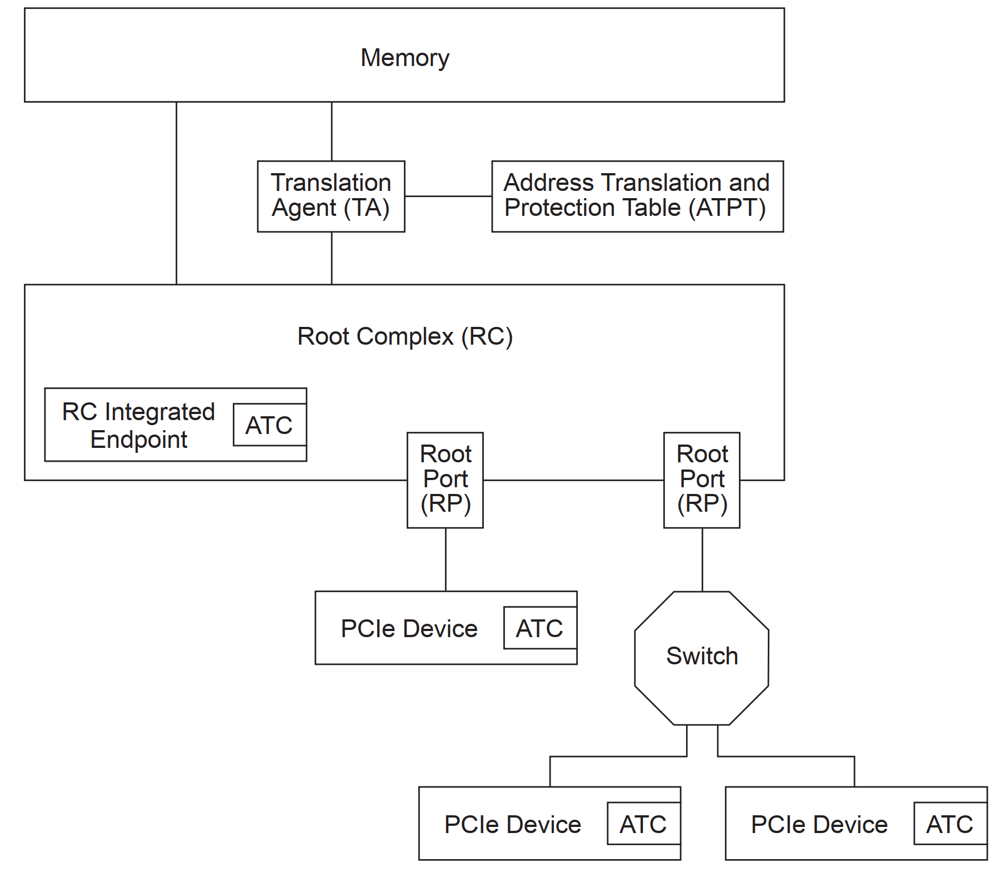
整个架构如图1所示，这里需要说明的是TA是iommu的一部分，它主要负责iova的转换以及通过ATPT来判断某个设备是否有权限access 某段内存；另外，从上图可以看到支持ATC 功能的设备在拓扑结构上可分为三类：一类是直接链接到RC上，一类是直接链接到root port上，最后一类是通过Switch链接到RP上。后两类拓扑结构如果PCIe 设备要enable ATS功能则Root Port必须要支持ATS功能。
聊完硬件构架，我们再来聊聊一下ATS功能的enable。首先，在iommu侧必须要能支持ATS 功能，这一点是通过iommu ecap register当中的DT位来表示其是否支持ATS功能。接着，我们来看一下RP支持ATS是如何report的。基于我们在iommu硬件架构和驱动初始化 这篇文章当中的介绍可以知道，在系统启动过程中bios会通过DMAR ACPI 表来获取 DMA remapping structures，而这些structures当中有一类就是 Root Port ATS Capability Reporting (ATSR) Structure 。
接下来我们看一下PCIe 设备对ATS的支持，在pcie config space侧相关的 capability and register 具体如下:
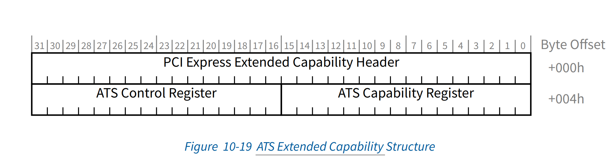
- ATS extend capability header(offset 00h)
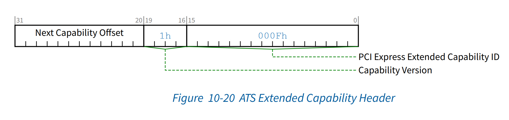
- ATS capability register(offset 04h) ATS 的cap register长度为15bits，其中bits 15:8为reserved，其余各bits定义如下
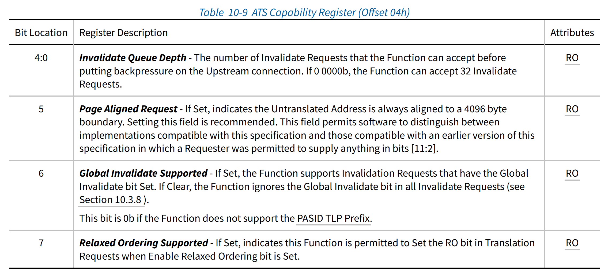
- ATS Control Register (Offset 06h)
ATS control register 长度为15bits，具体格式如下
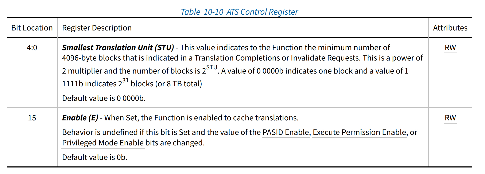
......
if (ecap_dev_iotlb_support(iommu->ecap) &&
pci_ats_supported(pdev) && dmar_find_matched_atsr_unit(pdev))
info->ats_supported = 1;
......
这段代码取自函数dmar_insert_one_dev_info 如果大家感兴趣可以去翻阅一下intel iommu的代码。我们接着分析这段代码的三个必要条件
ecap_dev_iotlb_support(iommu->ecap)// 即判断iommu 硬件 ecap的DT位是否为1
pci_ats_supported(pdev) // 判断pcie 设备有没有ats cap
dmar_find_matched_atsr_unit(pdev) //如果该pcie设备直接挂在RC上则返回true，如果该设备挂在RP上则判断RP是否支持ATS。
如果上面三个条件都为真时则表示这个设备是可以eanble ATS的，然后在iommu_enable_dev_iotlb 函数里面会调用pci_enable_ats 在设备侧使能ATS feature(将ATS Control Register 第15位置1)。
ATC和TA之间的交互
聊完了相关的硬件架构和feature使能，下面我们来聊一下ATC和TA之间的交互，下面一张图能够让大家有一个整体的认知
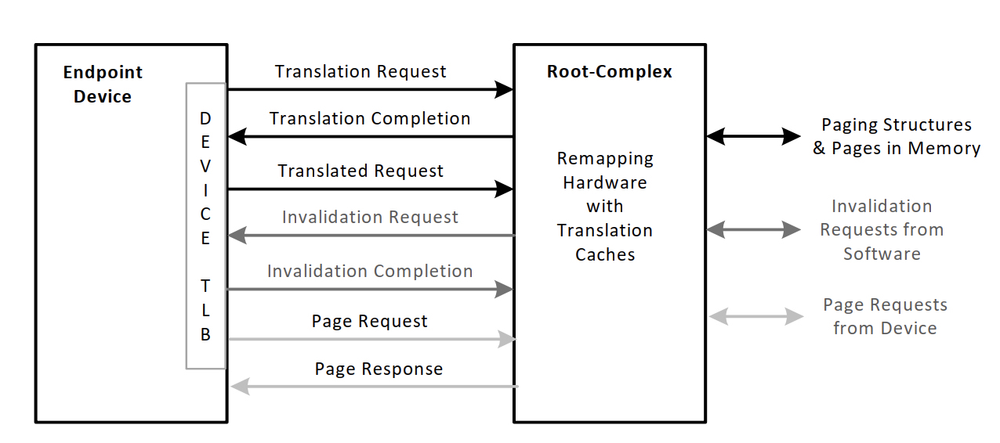
相关交互协议的种类如上图所示，为了区别开来这几中协议，ATS在TLP的header里面添加了一个额外的AT field，具体的示意如下图所示：
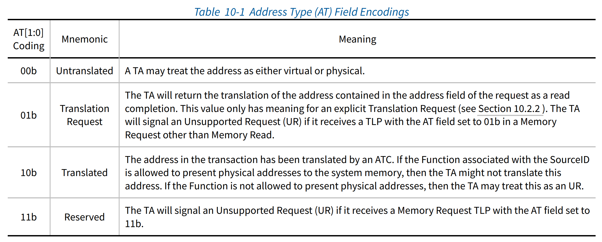
Translation request
先说一下Translation request使用的场景，当device ATC发生cache miss的时候设备通过生成一个Translation request 到TA，TA将需要翻译的iova对应的hpa返回给device，然后device把结果update到ATC里面。ATS的Translation request 格式跟 pcie 的memory read请求基本相同，唯一区别就是多了一个AT field。按照图7当中的定义，translation request AT必须01b。具体格式如下图所示
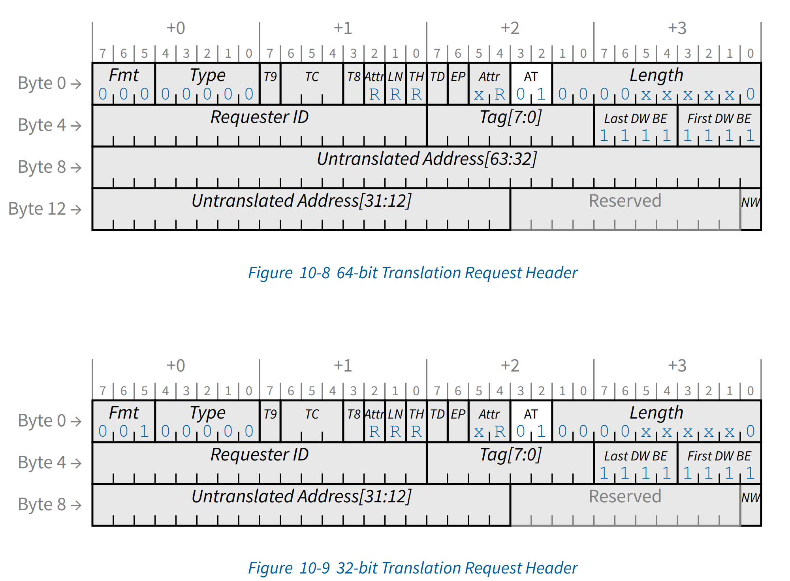
- Length field
该字段表示TA要返回多少个translation，每个translation大小为8bytes即64bit也就是一个iova地址的长度。length的大小通常用偶数个DWORDS来表示，最小值为2个DWORDS。之所以这么做是因为2个DWORDS刚好是一个iova地址大小，因此TA返回给设备的个数最多为Length/2个翻译结果。为什么是最多呢？我们接着往下分析，当length等于2时只返回一个translation结果即Untranslated address field所对应的iova地址的hpa；当length大于2时则返回的个数就大于1了，那么这时需要返回的结果所对应的iova的地址就是一个范围了，这个地址范围如何界定呢？这里就需要提到STU了(具体见图5当中所示) 通常在x86下stu的大小为4kB，那么在这种场景下Untranslated address field所对应的iova地址为起始地址，其范围为 iova ~ iova+4K *（length/2) ，step 大小为stu。再来说说为什么是最多返回length/2个，这个就得说一下IOMMU PAGE SIZE 了，一般情况下常用的IOMMU PAGE SIZE 大小可以分为4k，2M， 1G。如果iommu page size 大于4K比如2M，因为是连续的所以只需要返回初始iova对应的translation就行了。
- Untranslated address field
TA需要返回的translation所对应的iova地址，当length 大于2个DWORDS时为某一范围地址的初始值。
- No Write（NW） flag
当NW位置上时表示设备对该translation只能进行读操作。
Translation completion
针对上面的Translation request，如果TA无法正常处理则返回不带数据的结果并且通过status field来说明更具体的信息，相关的status code如下
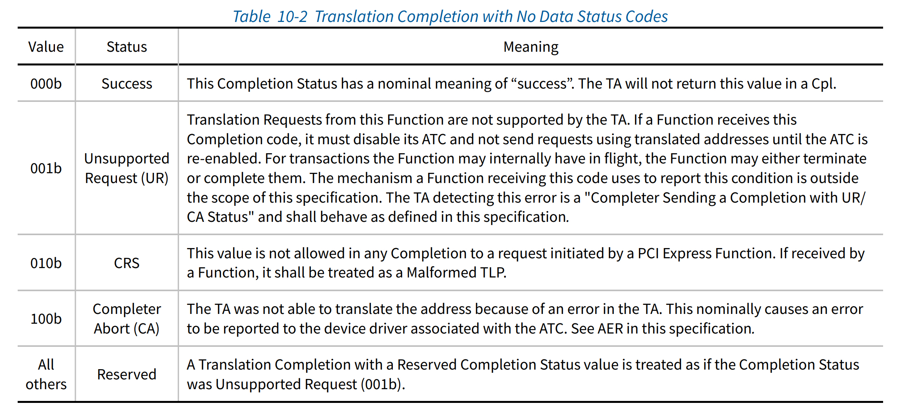
如果translation request被TA正常处理，则在completion当中会带相应的translation的结果，相关返回信息如下 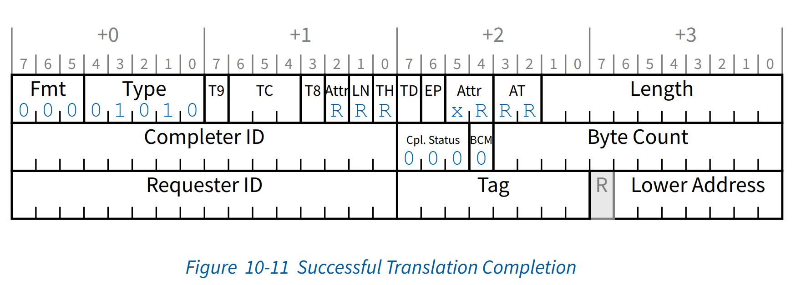
结合上面的两张图我们来介绍几个需要重点关注的字段
- Read permission(R)
如果置上则表示对这段返回的translation中的物理地址只能进行读操作。
- Write permission(w)
如果置上则表示对这段返回的translation中的物理地址只能进行写操作。
- Untranslated access only flag(U)
如果置上，则表示设备只能通过 untranslated-request的方式对这段返回的translation中的物理地址进行访问。
- Translated Address
如果R 或者W置上且U位被clear，则translated Address当中的地址就可以被设备缓存在自己的ATC当中用来iova的转换了。
- S
它表示translation rang的大小，如果S位置上则表示这个translation 的范围要大于4kB，其实这里跟上面讲到的translation request的length是遥相呼应的。上面也有讲到如果request里面要设置的返回结果大于一个stu且PAGE SIZE是连续的情况下是不需要返回指定的Length/2个结果，但是你必须要在返回的地址里面告诉device这个连续的range范围是多大，具体的信息我们可以看下面这张图
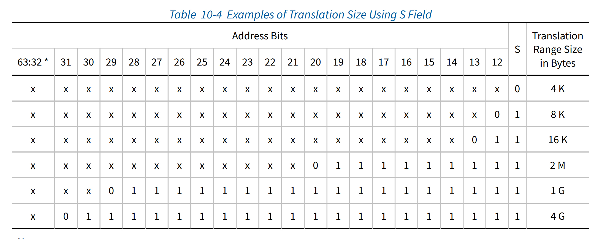
如上图所示不同大小的translation range size对应不同的address bits。以2M为例子，它的对所应的translation 结果的有效位为bits 63:21，则对某个iova进行转换的时候只需要Translated address[63:21] + iova[20:0] 即得到相应的hpa。
Translated request
当设备发起DMA的时候，设备就可以通过在本地的ATC先进行转换得到相应的hpa，然后将AT field 设置为10b。如果request能够通过TA的相关验证，则相关的请求会以passthrough形式进行处理即不再走iova到hpa的翻译流程。
Invalidation request
ATS通过这个协议来保证TA和ATC之间的数据一致性，当相关的translation 在TA侧发生变化时，TA需要触发一个Invalidate Request到ATC进行相关信息的同步。下面我们看一下invalidate request 具体信息
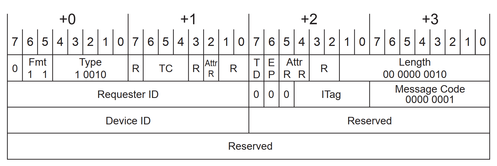
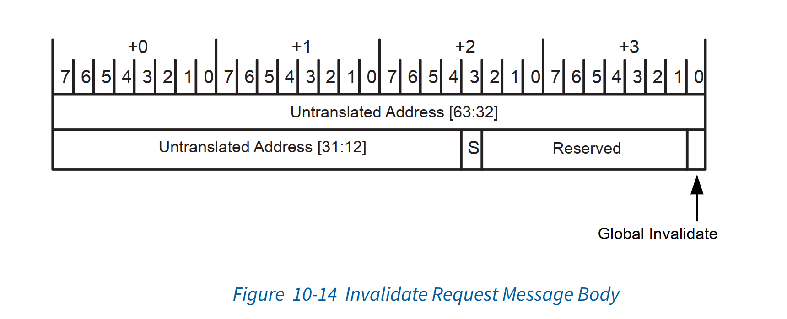
- ITag
TA侧用来标识它发起来的invalidate request，每个request的ITag都是不能重复的，它的大小为0~31。
- S
同translation request 当中的S位，表示要invalidate的地址范围。
- Utranslated Address
需要invalidated 的地址范围的起始地址
- Global Invalidate
这个标志位主要是针对PASID的场景，如果这个标志位置上，则表示这个BDF下面的所有的PASID都会被invalidate掉。如果这个invalidate request 是带有PASID 的 prefix的则这一位将不起作用。
Invalidate completion
当设备完成invalidate操作之后需要给TA发送invalidate completion messages。messages 具体的格式如下
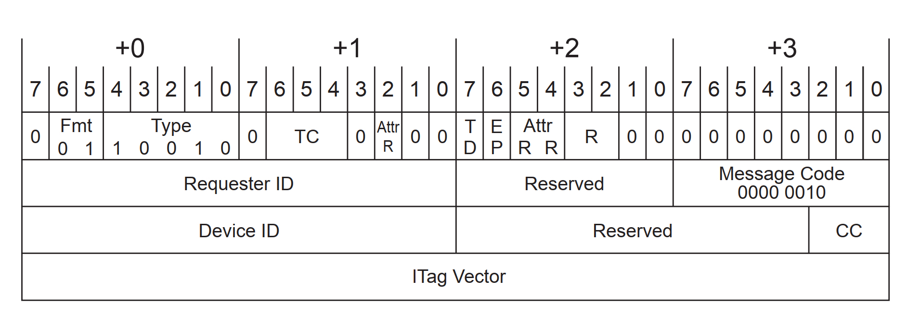
- Completion Count(CC)
针对每一个invalidate request要发出的 completion的个数，注意这个数字跟TC(traffic class)有关系，它主要是用来对PCIe链路进行QOS的，通常情况下每个pcie设备都必须实现一个defautl的TC即TC0此时TC field 的值为000b；当TC field的值为001~111时则表示TC1~TC7，它们有些不同的服务等级。在invalidate completion的场景下，如果设备只实现的默认的TC0的情况下，那么每个一个invalidate request只需要返回一个invalidate completion 即 cc = 1，否则就需要对每个TC返回一个invalidate completion即8个，那么此时cc = 8。
- ITag Vector
itag vector总共有32bits，它其中的每一个bit都对应着一个invalidate request。
关于这个invalidate translation的整个流程，大家可以参考一下如下这张图，相信通过这张图你能有个比较清晰的认知。
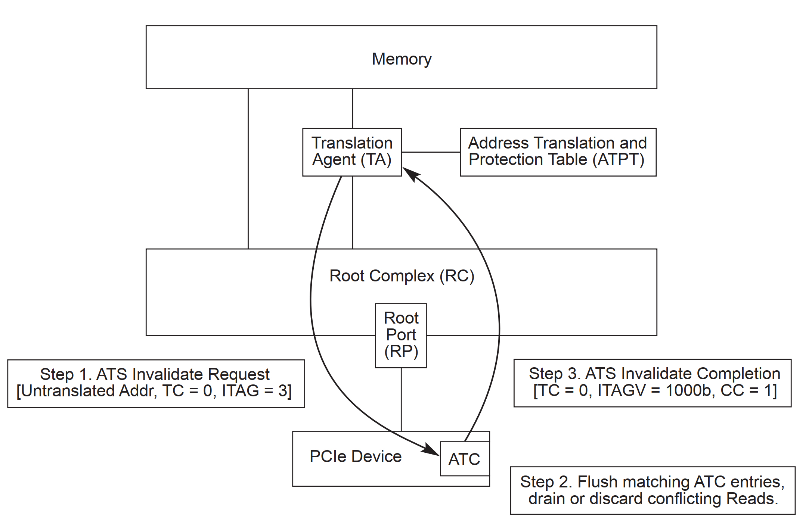
后面的page request我这里就不细讲了，如果大家感兴趣可以看看相关的spec。
总结&思考
ATS之于iommu就相当于TLB之于cpu，其起到的作用不言自明。但是目前支持ATS的设备并不多，一方面是因为大部分业务场景下对这一块感知并不明显，那部分感知比较明显的比如HPC，机器学习这些业务主要依赖GPU，NV针对这些limit也早就做了优化比如gpudirect等；还就是在设备上增加cache也是需要成本的，本来设备上的SRAM也没有多大，另外就是非虚拟化场景intel iommu也支持PT的方式从而避免了iova的转换的开销。
但是随着云原生和serverless的出现，可能就不一样了。举个例子，一台128核的icelake(后面的SPR有256核)最多能启动512台kata容器，按照每个容器一块磁盘一张网卡那么在dpu架构上也是需要1024块设备的，这种场景下对iommu侧的冲击就比较大了，此时ATS的作用就比较明显了。
相关参考
- pcie ATS spec